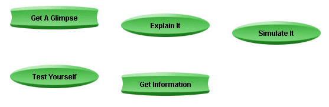

The MAP System
The title of this page is ambiguous. It can be interpreted in
two ways that will now be described.
- MAP (Modular Approach to Physics) is the name of a computer
tutorial system in physics. The system uses a content management
system called CANU (Content Arranging and Navigating Utility). CANU
has two main functions: (a) to allow an instructor to arrange
content in tree-like fashion and (b) to allow a learner to navigate
through this content. At the moment you are using the CANU
Navigator. The CANU Navigator starts running when you click the
Start button on the MAP front page. The CANU Arranger is available
only to instructors.
CANU delivers content in packages called "courses". When
starting the CANU Navigator you are asked to select one of these
courses from the Content menu. One of them has the name "MAP". It
has the same name as that of the entire tutorial system because it
is part of that system. MAP introduces the basic concepts
physicists use to describe and understand nature. There may also be
a course arranged by your instructor. It may use some material from
the course MAP and some new material added by your instructor.
- The content of MAP is arranged according to a system. (Here
and in the remainder, "MAP" refers to the course MAP, not to the
entire tutorial system.)
One learns by doing. MAP presents its content in the form of
learner activities. When navigating down a branch of MAP, you will
always end up at a set of buttons similar to that illustrated
below.
All buttons in the set carry labels describing activities. The
set of activities represented here is a typical sample. The nature
of these activities is described below. Each kind of activity lets
you approach the subject in a different way.

The rectangular buttons when pressed will open up a content item.
The oval buttons are branch points. When pressed, they will lead to
one or more content items or further branch points. For example,
Test Yourself would be a branch point leading to a set of
questions.
- Get A Glimpse. Introductory material that tries to draw
your attention to an important aspect of the concept to be studied,
without being technical. The presentation might involve a video or
flash animation, or a picture with some text.
- Explain It. Lesson-like material that explains the
concept in an interactive manner, often with the aid of one or more
interactive applets. The accompanying text may have an audio
track.
- Simulate It. Simulation(s) used in the Explain-It items.
Here, the simulations are not embedded in a lesson, but are made
available directly . This allows quick access to the simulations for
in-class use as 'dynamic overheads' by the instructor and for
experimentation by the learner. The simulations under Simulate It
usually have a larger screen format than when used in the Explain-It
context.
Detailed explanations of the features of a simulation (applet)
are available under Help on the applet's menu bar (top left corner
of the applet window). Go to Applet Help on the Help menu and look
at both the Help and ShowMe files where available.
Some simulations have suggested Activities to be carried out with
the simulations. These would be available from the Related Items
panel in the lower left-hand corner of the CANU Navigator window.
- Test Yourself. Collection of questions, e.g., in
multiple-choice, numerical answer, or fill-in-the-blank format.
These questions are based on the material dealt with in the other
items related to the given concept.
The questions will usually require not mere repetition, but an
application of the concept to a somewhat different situation.
Therefore they may at times give the appearance of presenting new
material. Beginning learners should not get discouraged if they
find quite a few of the questions challenging. Full solutions are
always provided and can be used to learn the material. Eventually,
and when preparing for exams, learners should be able to answer the
questions correctly and be prepared to handle similar ones on their
own.
- Get Information. Textbook-like material that summarizes
the important points. This material is not presented in interactive
fashion. Often, Get Information items are linked to other content
items to provide quick access to relevant background information.
Such links are provided in the Related Items panel in the lower
left-hand corner of the CANU Navigator window. To see an example,
click on the item 'Physical Reality' under Related Items. The item
will be presented in a second (pop-up) window. When done with the
item, close that window like any other browser window.
- Other Kinds of Content Items. The kind of content items
available will vary from concept to concept. At times you will
encounter fewer content items than those shown above or other ones,
e.g., Go To Lab.
For detailed information on how to use MAP, e.g., on how to
search for topics, go to the User's Guide on the Content menu at
the top left corner of the CANU Navigator window.
Explore experiments, concepts, theory, and experience the
fascination of science!